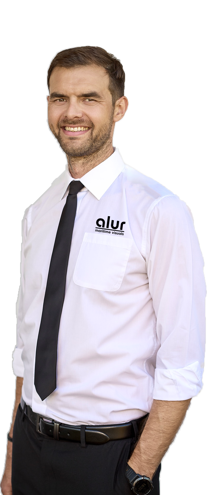

Website under construction!
Thank you for bearing with us
Alex
creator · alur maritime visuals
hampshire, uk
Hi there! I am a passionate visual creator focusing on commercial maritime photo and video visuals. I have been fascinated with cameras and editing beautifully crafted images for as long as I can remember, coming from a very creative and artistic family.
I have worked in the maritime industry for over 15 years - skippering luxury yachts for 9 years, before converting to commercial shipping as a deck officer, working onboard cruise ships and now smaller commercial coastal vessels in the UK.
Among the long list of jobs involved in running alur maritime visuals, I am first and foremost a photographer, videographer, drone operator and video editor.
It has been a dream to combine my passions for the maritime industry and visuals arts.
Skills include: Premier Pro | Photoshop | After Effects | Drone Operation | Photo & Video | Visual Storytelling
Get in touch